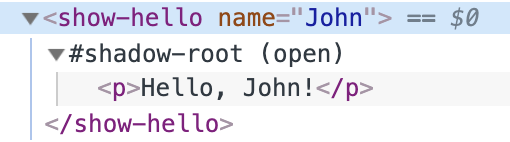

Shadow DOM
Теневой DOM («Shadow DOM») используется для инкапсуляции. Благодаря ему в компоненте есть собственное «теневое» DOM-дерево, к которому нельзя просто так обратиться из главного документа, у него могут быть изолированные CSS-правила и т.д.
Теневой DOM («Shadow DOM») используется для инкапсуляции. Благодаря ему в компоненте есть собственное «теневое» DOM-дерево, к которому нельзя просто так обратиться из главного документа, у него могут быть изолированные CSS-правила и т.д.
Задумывались ли вы о том, как устроены и стилизованы сложные браузерные элементы управления?
Например, <input type="range">:
Браузер рисует их своими силами и по своему усмотрению. Их DOM-структура обычно нам не видна, но в инструментах разработчика можно ее посмотреть. К примеру, в Chrome для этого нужно активировать пункт «Show user agent shadow DOM».
После этого <input type="range"> выглядит так:
То, что находится под #shadow-root - и называется «shadow DOM» (теневой DOM).
Мы не можем получить доступ к теневому DOM встроенных элементов с помощью обычных JavaScript-вызовов или с помощью селекторов. Это не просто обычные потомки, это мощное средство инкапсуляции.
В примере выше можно увидеть полезный атрибут pseudo. Он нестандартный и существует по
историческим причинам. С его помощью можно стилизовать подэлементы через CSS, например, так:
<style>
/* Делаем цвет шкалы ползунка красным */
input::-webkit-slider-runnable-track {
background: red;
}
</style>
<unput type="range">Еще раз заметим, что pseudo - нестандартный атрибут. Если говорить хронологически, то сначала
браузеры начали экспериментировать с инкапсуляцией внутренних DOM-структур для элементов, а уже потом, через
некоторое время, появился стандарт Shadow DOM, который позволяет делать то же самое, нам, разработчикам.
Далее мы воспользуемся современным стандартом Shadow DOM, описанным в спецификации DOM spec и других спецификациях.
Каждый DOM-элемент может иметь 2 типа поддеревьев DOM:
Light tree - обычное, «светлое» DOM-поддерево, состоящее из HTML-потомков. Все поддеревья, о которых мы говорили в предыдущих главах, были «light».
Shadow tree - скрытое, «теневое» DOM-поддерево, не отраженное в HTML, скрытое от посторонних глаз.
Если у элемента имеются оба поддерева, браузер отрисовывает только теневое дерево. Также мы все же можем задать «композицию» теневого и обычного деревьев. Позже в главе Слоты теневого DOM, композиция мы рассмотрим детали.
Теневое дерево можно использовать в пользовательских элементах (Custom Elements), чтобы спрятать внутренности компонента и применить к ним локальные стили.
Например, этот <show-hello> элемент прячет свой внутренний DOM в теневом дереве:
<script>customElements.define('show-hello', class extends HTMLElement { connectedCallback() { const shadow = this.attachShadow({mode: 'open'}); shadow.innerHTML = `<p>Hello, ${this.getAttribute('name')}</p>`; }</script> <show-hello name="John"></show-hello>
А вот как получившийся DOM выглядит в инструментах разработчика в Chrome, весь контент внутри «#shadow-root»:
Итак, вызов elem.attachShadow({mode: ...}) создает теневое дерево.
Есть два ограничения:
Для каждого элемента мы можем создать только один shadow root.
В качестве elem может быть использован пользовательский элемент (Custom Element),
либо один из следующих элементов: article, aside, blockquote,
body, div, footer, h1...h6, header,
main, nav, p, section или span.
Остальные, например, <img>, не могут содержать теневое дерево.
Свойство mode задает уровень инкапсуляции. У него может быть только два значения:
"open" - корень теневого дерева («shadow root») доступен как elem.shadowRoot.
Любой код может получить теневое дерево elem.
"closed" - elem.shadowRoot всегда возвращает null.
До теневого DOM в таком случае мы сможем добраться только по ссылке, которую возвращает
attachShadow (и, скорее всего, она будет спрятана внутри класса). Встроенные браузерные
теневые деревья, такие как у <input type="range">, закрыты. До них не добраться.
С возвращаемым методом attachShadow объектом
корнем теневого дерева, можно работать
как с обычным DOM-элементом: менять его innerHTML или использовать методы DOM, такие как
append, чтобы заполнить его.
Элемент с корнем теневого дерева называется - «хозяин» (host) теневого дерева, и он доступен в качестве
свойства host у shadow root:
// При условии, что {mode: 'open'}, иначе elem.shadowRoot равен null
alert(elem.shadowRoot.host === elem); // trueТеневой DOM отделен от главного документа:
Элементы теневого DOM не видны из обычного DOM через querySelector. В частности, элементы
теневого DOM могут иметь такие же идентификаторы, как у элементов в обычном DOM (light DOM). Они должны
быть уникальными только внутри теневого дерева.
У теневого DOM свои стили. Стили из внешнего DOM не применятся.
Например:
<style> /* Стили документа не применятся в теневом дереве внутри #elem (1) */ p {color: red} </style> <div id="elem"></div> <script>elem.attachShadow({mode: 'open'}); // У теневого дерева свои стили (2) elem.shadowRoot.innerHTML = '<style> p {font-weight: bold;} </style> <p>Hello, John!</p>'; // <p> виден только запросам внутри теневого дерева (3) alert(document.querySelectorAll('p').length); // 0 alert(elem.shadowRoot.querySelectorAll('p').length); // 1</script>
Стили главного документа не влияют на теневое дерево.
... Но свои внутренние стили работают.
Чтобы добраться до элементов в теневом дереве, нам нужно искать их изнутри самого дерева.
Совместимость: https://dom.spec.whatwg.org/#shadow-trees
Теневой DOM упоминается во многих других спецификациях, например,
DOM Parsing указывает,
что у shadow root есть innerHTML.
Теневой DOM - это способ создать свой изолированный DOM для компонента.
shadowRoot = elem.attachShadow({mode: 'open' | 'closed'}); - создает теневой DOM для
elem. Если mode: 'open', он доступен через свойство elem.shadowRoot.
Мы можем создать подэлементы внутри shadowRoot с помощью innerHTML
или других методов DOM.
Элементы теневого DOM:
Обладают собственной областью видимости идентификаторов.
Невидимы JavaScript селекторам из главного документа, таким как querySelector.
Стилизуются своими стилями из теневого дерева, не из главного документа.
Теневой DOM, если имеется, отрисовывается браузером вместо обычных потомков (light DOM). В главе Слоты теневого DOM, композиция мы разберем, как делать их композицию.